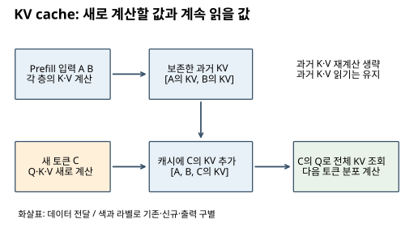
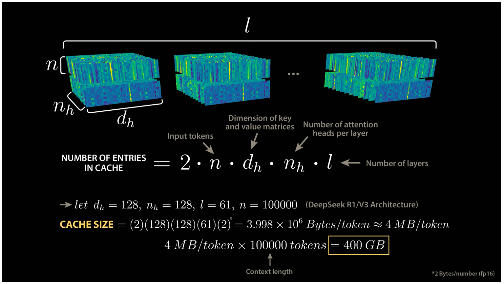
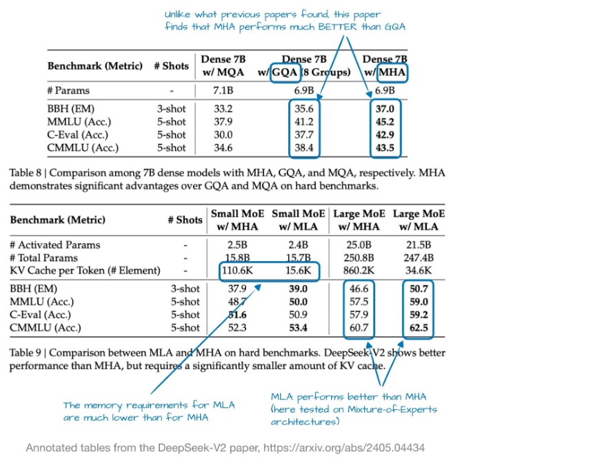
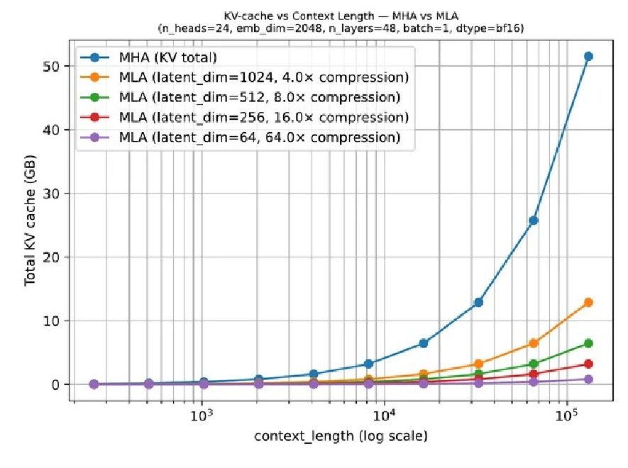

19. KV 캐시, GQA와 MLA: 무엇을 저장하고 다시 읽을까
학습 안내 · 이전: GRPO · 다음: 효율적인 구조
이 장은 생성 중 과거 계산을 재사용하는 KV 캐시, KV head를 공유하는 GQA, 저장 표현을 압축하는 MLA를 비교한다. 캐시가 줄이는 것은 과거 표현의 재계산이며, 과거를 조회하는 attention은 남는다. 240~250쪽이 대상이다.
선행 배경은 Attention의 계산과 위치정보와 RoPE다. Q는 찾을 내용, K는 비교할 표지, V는 가져올 내용이다. head는 서로 다른 투영으로 정보를 읽는 attention 갈래다. causal mask는 미래 위치 접근을 막는다. 처음에는 1~3절, 계산 복습은 4절과 확인 문제를 읽는다.
학습 목표는 과거 K·V의 재사용 조건을 설명하고, 주어진 차원과 정밀도로 캐시 bytes를 계산하며, GQA와 MLA의 공유 대상을 구별하고, RoPE가 단순 선형 재배열에 주는 제약을 말하는 것이다.
1. KV cache: 과거 토큰의 K와 V는 다시 만들지 않는다
Prefill은 입력 prompt의 토큰을 한꺼번에 처리하는 단계다. Decode는 이전 출력까지 문맥에 넣고 다음 토큰을 한 개씩 생성하는 단계다. causal 모델에서는 미래에 새 토큰을 붙여도 과거 위치가 볼 수 있는 문맥은 변하지 않는다. 따라서 각 층의 과거 K·V를 저장해 다음 decode에서 재사용할 수 있다.
캐시가 없으면 A B로 다음 토큰 C를 만들고, 다시 A B C를 모델에 넣으며 A·B의 표현도 계산한다. 캐시가 있으면 A·B의 K·V를 보존하고 C의 Q·K·V를 새로 만든다. C의 Q는 저장된 A·B와 새 C의 K 전체에 점수를 내고 V를 합친다. 과거를 읽는 attention까지 사라지는 것은 아니다. 통상 Q는 과거 토큰의 값을 이후 query로 재사용할 필요가 없어 K·V처럼 모두 보존하지 않는다.
아래 그림을 왼쪽에서 오른쪽으로 읽으며 새로 만드는 값과 계속 보존하는 값을 구별한다.


캐시의 장점은 반복되는 과거 계산을 줄인다는 것이다. 대신 생성 길이에 따라 캐시가 커지고, 매 decode마다 이를 읽는 메모리 대역폭이 병목이 될 수 있다. prompt·모델 가중치·위치 처리 등 조건이 달라지면 기존 캐시를 무조건 재사용할 수 없다.
241쪽 상세 도식의 가중치 1.7·2.1은 그림에 적힌 q와 k의 직접 내적으로 재현되지 않는다. 예를 들어 [0.1,0.5]·[0.3,0.7]=0.38이다. 따라서 그 그림에서는 재사용 연결만 배우며 표시 숫자를 검증된 attention 계산으로 사용하지 않는다.
작은 메모리 계산
동일 길이 배치를 가정하고 B=배치 수, L=층 수, T=저장 토큰 수, Hkv=KV head 수, dh=head 폭, s=원소당 바이트라 하자.
KV bytes = 2 × B × L × T × Hkv × dh × s
2는 K와 V 두 개를 뜻한다. 예제는 B=1,L=2,T=4,Hkv=4,dh=8,s=2이다.
한 토큰·한 층: 2×4×8 = 64개 원소
4토큰·2층: 64×4×2 = 512개 원소
2바이트 저장: 512×2 = 1,024 bytes
T=8로 두 배면 2,048 bytes
가중치·활성값·임시 버퍼·페이지 관리 메타데이터를 제외한 교육용 KV 데이터만의 계산이다. 실제 전체 GPU 메모리를 뜻하지 않는다. MiB=2^20 bytes, MB=10^6 bytes도 구별한다.
2. GQA: query는 여러 개, 저장할 K·V는 그룹별로
MHA는 query head마다 대응 K·V head를 둔다. **Grouped-query attention(GQA)**는 여러 query head가 하나의 K·V head를 공유한다. query head 수 Hq는 유지하면서 Hkv를 줄이는 구조다. Hkv=1인 끝점은 MQA라고 부른다. 단순 캐시 삭제 설정이 아니라 모델의 투영·학습 구조와 연결되므로 임의의 MHA 모델에서 K·V head를 버리면 같은 결과가 보장되지 않는다. GQA 원 논문
| 같은 Hq=4일 때 | Hkv | query와 KV 연결 | 위 예제의 캐시 |
|---|---|---|---|
| MHA | 4 | Q0→KV0, Q1→KV1, Q2→KV2, Q3→KV3 | 1,024 bytes |
| GQA | 2 | Q0·Q1→KV0, Q2·Q3→KV1 | 512 bytes |
| MQA | 1 | 모든 Q→KV0 | 256 bytes |
위 비율은 B·L·T·dh·dtype가 같다는 조건의 저장량이다. 품질이나 생성 속도가 정확히 같은 비율로 바뀐다는 뜻은 아니다. 그룹이 줄면 공유가 강해져 저장은 줄지만 표현 및 학습 조건을 평가해야 한다.
3. MLA: K·V의 공통 저차원 표현을 저장한다
**Multi-head latent attention(MLA)**은 K·V를 만드는 데 필요한 작은 공유 latent, 즉 압축된 중간 표현을 캐시에 둔다. 여러 query가 K·V를 공유하는 GQA와는 압축 방식이 다르다. 여기서는 원문 247~248쪽처럼 위치 성분을 생략한 선형 부분부터 설명한다.
행벡터 배치 X의 모양을 [T,C], 공유 latent Z를 [T,r]라 하자. Z=X Wdown, K=Z UK, V=Z UV이다. UK는 [r,dk], UV는 [r,dv]이다. 작은 r은 저장을 줄이지만 정보 병목이 될 수 있다.
점수: Q Kᵀ = Q (Z UK)ᵀ = (Q UKᵀ) Zᵀ
출력: A V = A (Z UV) = (A Z) UV
Q가 [1,dk]이면 Q UKᵀ는 [1,r], Zᵀ는 [r,T]이므로 점수는 [1,T]이다. 전체 K를 복원하지 않고 작은 latent 공간에서 점수를 구할 수 있다. V도 먼저 latent 가중합을 만든 다음 UV를 적용할 수 있다. 출력 투영과 UV를 결합하는 것도 선형 연산의 결합법칙을 활용한다.
교육용 숫자로 Z=[[1,2],[3,4]], UK=[[1],[2]], Q=[[2]]라 하자. 직접 K는 [[5],[11]], 점수는 [10,22]다. 재배열하면 Q UKᵀ=[2,4], [2,4] Zᵀ=[10,22]로 같다. 이는 선형 부분이 같은 계산임을 보일 뿐, 실제 모든 연산 비용이 항상 줄어든다는 증명은 아니다.
원문 조건 보충: 실제 DeepSeek MLA에는 RoPE를 위한 분리된 위치 key 성분도 있어 ‘latent만 저장한다’는 도식은 전체 캐시를 단순화했다. latent 폭에 추가 위치 성분 등을 포함해 비교해야 한다. 원문 249쪽의 ‘4 MB/500 KB/70 KB’, ‘57배’, ‘6배’는 비교 모델 구성·층수·정밀도·측정 조건이 충분히 적혀 있지 않아 일반 성능 수치로 사용하지 않는다. 구조와 상세 조건은 DeepSeek-V3 §2.1.1을 참고한다.
4. 큰 수치도 같은 식으로 검산하기
244쪽은 층마다 쌓이는 K·V를 입체 블록으로 그린다. 다음 그림에서 토큰 길이 n, head 폭 dh, head 수 nh, 층수 l, 원소당 2 bytes라는 각주를 먼저 확인한다.

그림의 조건을 대입하면 토큰당 2×128×128×61×2=3,997,696 bytes다. 100,000토큰이면 399,769,600,000 bytes, 즉 399.7696 GB 또는 약 372.3145 GiB다. 원문의 400GB는 십진 근사다. 이 수치는 동일 head 폭과 층수로 전체 K·V를 저장하는 MHA 가정이다. 그림의 DeepSeek R1/V3 문구를 실제 MLA 캐시가 400GB라는 뜻으로 읽지 않는다.
보충: DeepSeek-V3 보고서의 층수 61, KV latent 폭 512, 분리된 위치 key 폭 64를 사용하면, 아래의 이상적인 압축 캐시는 토큰당 61×(512+64)×2=70,272 bytes다. 동일 기준 MHA와의 비율은 3,997,696/70,272=56.8889다. 따라서 249쪽의 약 70KB·57배는 이 저장 가정 아래 설명할 수 있지만, 전체 GPU 메모리나 실측 속도 배수로 확장할 수 없다. DeepSeek-V3 §4.2
GQA를 Hkv=16으로 가정하면 토큰당 499,712 bytes로 약 500KB가 된다. 이는 교안에 빠진 head 수를 역으로 맞춘 교육용 조건이며 원문 실험 설정의 확인이 아니다. 전통적 Transformer 대비 생성 6배라는 문구에는 장치·배치·길이·커널과 비교 모델이 부족하므로 성능 검증은 미확인이다.
5. MLA와 RoPE: 위치 성분은 따로 남긴다
RoPE는 위치에 따라 Q·K의 좌표쌍을 회전해 상대 위치가 내적에 영향을 주게 한다. 3절의 선형 재배열은 행렬의 결합법칙을 썼다. 그러나 K 투영 뒤에 위치마다 다른 회전 행렬이 끼면, 그 회전을 무시하고 고정 UK를 query 가중치에 한 번 흡수할 수 없다. 행렬 곱은 순서를 마음대로 바꾸는 교환법칙을 따르지 않기 때문이다.
원문 단순화의 보충: DeepSeek MLA는 내용용 latent와 분리된 RoPE key 성분을 저장한다. 각 head는 내용 점수와 위치 점수를 함께 사용한다. 따라서 이상적인 캐시 식은 B×L×T×(r+dR)×s이며 r은 KV latent 폭, dR은 공유 위치 key 폭이다. query latent까지 과거 위치마다 캐시에 추가하는 식은 이 구성의 의도가 아니다. DeepSeek-V2 §2.1.3, DeepSeek-V3 §2.1.1
작은 예: B=1,L=2,T=4,r=4,dR=2,s=2이면 96 bytes다. latent만 세면 64 bytes가 되어 위치용 32 bytes를 빠뜨린다. 이것은 학습용 차원이며 실제 모델 설정이 아니다. 낮은 r은 저장을 줄이지만 표현 병목·학습 변화가 생길 수 있다. 임의 MHA 모델의 K·V를 사후에 작은 벡터로 바꿔도 출력이 동일하다는 뜻이 아니다.
3절 Value 재배열도 검산하자. Z=[[1,2],[3,4]], UV=[[1],[2]], A=[0.25,0.75]이면 V=[5,11], 직접 가중합은 9.5다. 먼저 AZ=[2.5,3.5]를 만든 뒤 UV를 곱해도 9.5다. softmax를 선형 변환과 교환한 것이 아니라 같은 A가 정해진 뒤 행렬 곱의 괄호만 바꾼 것이다.
6. 성능표와 메모리 곡선 읽기
250쪽의 왼쪽은 벤치마크 표, 오른쪽은 고정 차원의 저장량 곡선이다. 표를 볼 때 품질 지표의 예외와 파라미터 수 차이를 찾는다.

원문 표 9의 작은 MoE에서 C-Eval은 MHA 51.6, MLA 50.9로 내려간다. 따라서 'MLA는 모든 지표가 높다'는 결론은 표와 맞지 않는다. KV Cache per Token의 단위는 원소 수이며 작은 모델 110.6K→15.6K, 큰 모델 860.2K→34.6K다. bytes로 바꾸려면 정밀도를 곱한다. 활성 파라미터 수도 서로 다르므로 순수 attention 교체만의 효과로 단정하지 않는다. DeepSeek-V2 부록 D, 표 9
오른쪽 그래프는 가로축 문맥 길이를 로그 눈금으로 표시한다. 세로축은 KV cache GB이고, 범례의 latent 폭은 1024·512·256·64다.

이 그림은 측정 latency가 아니다. x축 로그 눈금에서는 길이에 선형인 y도 휘어 보일 수 있다. 범례의 4·8·16·64배는 RoPE 없는 2×2048/r 계산과 맞는다. 실제 MLA를 비교할 때는 dR 등 추가 저장을 포함해야 한다. head 수 24와 임베딩 폭 2048은 통상 균등 head 분할로 정수 폭을 만들지 못하므로, 이 그림의 파라미터 표기는 실제 모델 구성으로 사용하지 않는다.
7. 작은 활동과 확인 문제
- 1절의 B=1,L=2,T=4,Hkv=4,dh=8,s=2에서 배치를 3으로, Hkv를 2로 바꾸면?
- 캐시가 있으면 새 query가 과거 K를 읽지 않아도 되는가? 한 토큰 decode 비용과 생성 전체 비용도 같은가?
- r=4,dR=2인 캐시에서 dR을 누락하면 몇 퍼센트를 적게 세는가?
- GQA는 무엇을 공유하고 MLA는 무엇을 저장하는가? 저장량이 절반이면 속도도 두 배인가?
- 길이가 두 배가 된 메모리 곡선을 보고 품질 향상을 결론낼 수 있는가?
해설
2×3×2×4×2×8×2=1,536 bytes. 1·2절의 축을 각각 바꾼다.- 아니다. QK 점수와 V 가중합이 남는다. 단일 decode의 과거 조회는 길이 T에 비례하며, 여러 decode의 전체 비용은 그 길이들을 합해야 한다. 243쪽의 정성 곡선을 전체 생성의 보편 선형 시간으로 읽지 않는다.
- 실제 96 bytes에서 32 bytes가 빠지므로 1/3, 약 33.33% 과소계산이다. 5절로 돌아간다.
- GQA는 여러 Q가 KV head를 공유하며 MLA는 저차원 KV 표현과 위치 성분을 저장한다. 속도는 메모리 이동·계산·커널·배치에 의존하므로 저장 비율만으로 확정할 수 없다.
- 아니다. 저장량 그래프에는 정답률 측정이 없다. 6절의 표와 그래프의 측정 대상을 구별한다.
활동: 종이에 A B의 K·V 두 칸을 그린 뒤 C의 한 칸을 추가한다. C의 Q에서 세 K로 화살표를 긋고 세 V의 가중합을 표시한다. 예상 결과는 기존 두 칸을 다시 계산하지 않으면서 세 칸을 모두 참조하는 그림이다. 실제 GPU 실행이나 원문 벤치마크 재현은 수행하지 않았다. 240쪽부터 상세 읽기.